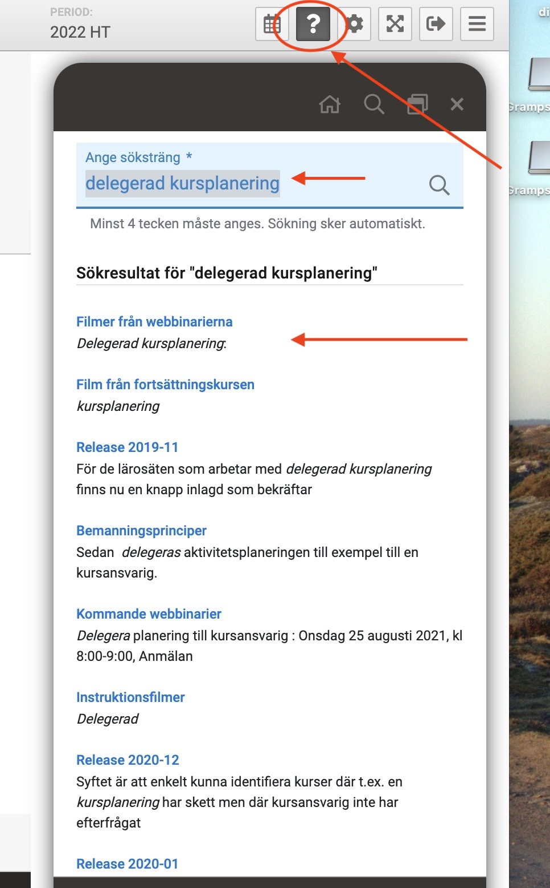
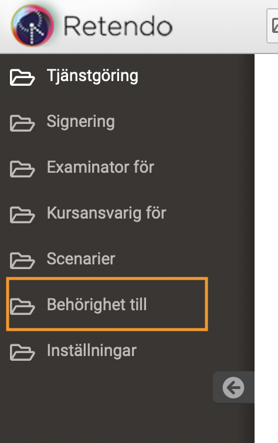
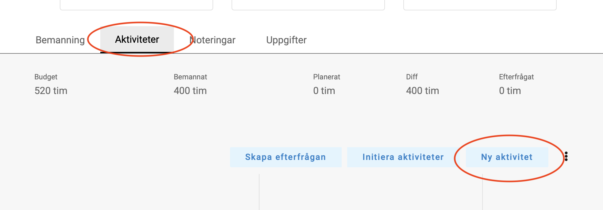
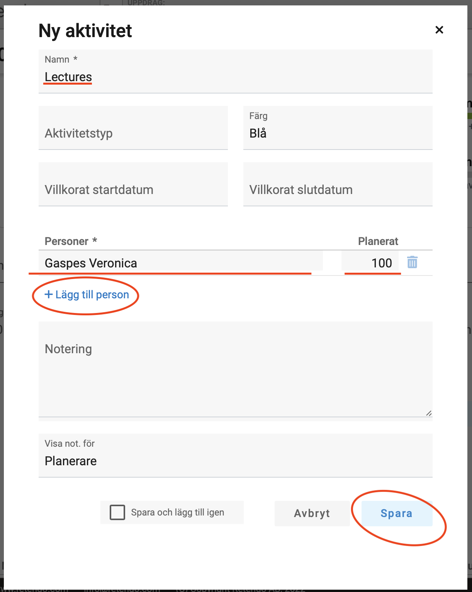

Course responsability and activity planning
If you are responsible for a course at ITE and the course is taught by
several teachers, it is you that at some point must
- decide what activities to have in the course,
- decide on more or less how many hours each teacher doing the
teaching in each of these activities will need and
- suggest what people should be involved (either you know this
already from the last time the course was offered or you have an
idea or have talked to someone).
By activities we mean things like lectures, exercises, labs,
seminars, examination. It could also be teaching lectures, teaching exercise
sessions, supervising labs, marking labs, marking exams, producing
material for the course. It could also be that the course is divided
in modules with a teacher completely responsible for each module, then
the modules could be the activities. There is no definition of what an activity is
but it should relate to how you organise the course and it should not
be too detailed.
Activity planning in Retendo
The tool that we use to document duty planning, Retendo, has the
possibility of introducing activities in courses. We are free to name
the activities, they do not need to be the same for all courses. For
each activity we can suggest one or more persons to take care
of the activity. For each suggested person we can suggest a
number of hours for this person to use. Any one person can be suggested
for several activities or just one.
One reason to have this information in Retendo is that if we have to replace someone who needs to leave
the course we will know better what kind of person we need to look
for.
Delegating activity planning in Retendo
If we are going to have this information in Retendo we need to allow
course responsibles to introduce the activities and suggest people
with hours. This is because it is the course responsible who knows
what activities to introduce and how the different teachers can
contribute. The department manager in charge of deciding on duty
planning can only get hold of this information by consulting the
course responsible. Instead of having to exchange emails the course
responsible could directly suggest in Retendo.
In Retendo it is possible delegate to the course responsible the introduction of activities to a course.
If you are given this right it is
important to know that you are only suggesting teachers and how many
hours they could take in the different activities. It
is the department manager that does duty planning and decides whether
it is possible to plan the course as you suggest.
Delegating this task would allow us to have a documentation in case we
need to replace a teacher and it would help reduce email exchange with
the department manager to plan courses.
Doing activity planning in Retendo
To do activity planning you need to get the right to do
Kursplanering using what Retendo calls delegerad
kursplanering.
There is a webinar that you can access from Retendo's
question mark on the top right. The howto for
introducing activities and suggesting teachers starts
after 6 min. How to access the courses you can plan comes after 7:15
min. Unfortunately the webinar is in Swedish so we describe the
process in this document too (see next section).

Accessing the courses you can plan
If things have worked properly you should have a new right that you
can access from the right black column, link Behörighet till.

If you click on this link you should see a course that you are
responsible for:
Access the course via the link Öppna modul that you get by cklicking
on the three dots.
Creating activities
In this view of the course you can create activities and suggest
teachers. Remenber that you are just suggesting, you are not doing the
duty planning!
In the lower part of your module you will see something like this:

By selcting Ny Aktivitet under Aktiviteter you will be
able to create activities. You will get a pop-up like the one below
where we have already filled in a name (Lectures), added one teacher
(Gaspes Veronica) with some
hours (100). You can add more teachers and you must remember to Spara
(save in Swedish).

Last modified: Thu Feb 10 16:24:52 CET 2022